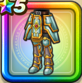

ガイアのよろい下
攻略班 6.5点 / 攻撃減耐性+10%怯え耐性+10%怯え耐性+5%ジバリア属性ダメージ+3%
くわしい特徴
【レベル別習得スキル】 Lv1攻撃減耐性+10% Lv8すばやさ+5 Lv10怯え耐性+10% Lv15ジバリア属性ダメージ+3% Lv18怯え耐性+5% Lv20【魔法戦士】こうげき魔力+5 Lv20【バトマス】攻撃力+5 Lv23さいだいHP+5 Lv25こうげき魔力+5 【限界突破スキル】 1凸攻撃減耐性+10% 2凸守備力+5 3凸守備力+7 4凸さいだいHP+5